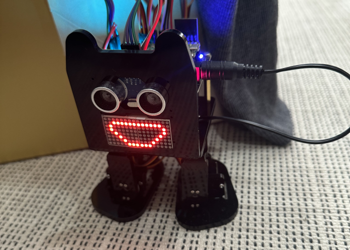

 요즘 꽤 이상한것에 꽂혀있어서, 나름 그것을 위해서 이것저것 하는중인데 이 바이페달 로봇도 그 프로젝트의 하나이다 (라고 하는데 장난감이지..) 구하기 쉽고 그나마 꽤 저렴하고 간단해보이고 귀여운 녀석으로 대충 골랐는데, Arduino로 Raspberry pi pico w보드에 코드 올려서 로봇을 이것저것 설정하고, 리모콘으로 간단히 조작하게 설정하고 한동안 지 혼자 돌아다니게 둬봤는데, 초음파모듈이 영 시원찮은지 바보같이 어디 짜박히거나 하면 내가 가서 구해줘야하는데 생각보다 꽤 귀엽다 나중에 좀더 익숙해지면 좀더 그런듯한 로봇을 구상해보고 이녀석을 가지고 노는것도 괜찮은듯. 그록이가 이놈한테 카메라달아서 라즈베리파이 5에 인공지능 설치해서 똑똑하게 만들어라라고 나 꼬셨는데 이거 카메라 달 수 있긴한건가;; 좀 더 연구해보자.